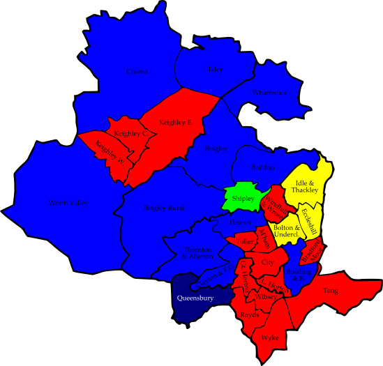
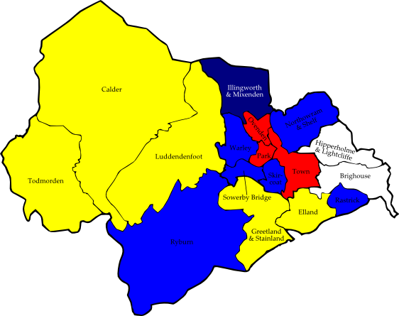
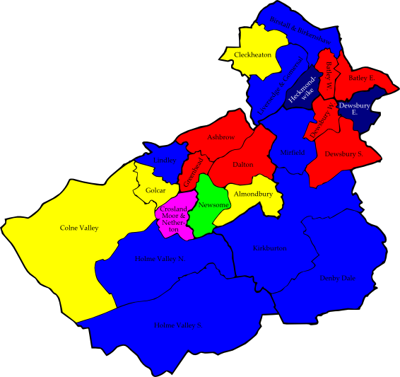
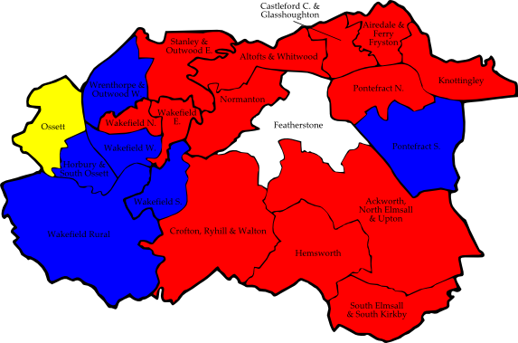

8.1 Bradford
Baildon
|
Valerie Townend | C | 2,595 |
| Christine Briggs | LD | 2,120 |
| Jonathan Hayes | Grn | 417 |
| Mohammad Yaqoob | Lab | 237 |
Bingley
|
David Heseltine | C | 2,941 |
| Frank Needham | Lab | 1,133 |
| Arthur Arnold | Grn | 691 |
| Margaret Fielden | LD | 676 |
Bingley Rural
|
Michael Ellis | C | 2,861 |
| Nicholas Stamp | BNP | 1,085 |
| James Newton | Lab | 945 |
| Alan Sykes | LD | 718 |
Bolton and Undercliffe
|
David Gray | LD | 2,146 |
| Anthony Niland | Lab | 958 |
| John Robertshaw | C | 679 |
Bowling and Barkerend
|
Zameer Shah | C | 1,792 |
| Raymond Bage | Lab | 1,289 |
| Mukhtar Ali | LD | 989 |
| Sharif Gawad | BNP | 630 |
Bradford Moor
|
Mohammed Shafiq | Lab | 2,129 |
| Azhar Mahmood | C | 1,486 |
| Ali Jamal | LD | 1,410 |
City
|
Munir Ahmed | Lab | 2,413 |
| Tahir Mahmood | LD | 420 |
| Daniel Paterson | C | 350 |
| John Robinson | Grn | 324 |
Clayton and Fairweather Green
|
David Servant | C | 1,269 |
| Peter Longthorn | Lab | 1,218 |
| Kim Riach | BNP | 1,106 |
| Lorna Leeming | LD | 665 |
Craven
|
Andrew Mallinson | C | 2,636 |
| Steven Carter | Lab | 1,000 |
| Frances McAulay | LD | 751 |
Eccleshill
|
Colin McPhee | LD | 1,205 |
| Peter Wade | BNP | 1,142 |
| Gillian Thornton | Lab | 920 |
| David James | C | 728 |
Great Horton (2)
|
Joanne Dodds | Lab | 1,772 |
| John Godward | Lab | 1,577 |
| Richard Milczanowski | C | 1,219 |
| Darryl Brock | C | 1,017 |
| Margaret Chadwick | LD | 746 |
| Antony Habergham | LD | 659 |
Heaton
|
Mohammad Masood | C | 1,477 |
| Mark Fielding | Lab | 1,144 |
| Steven Schofield | Grn | 1,043 |
| Tariq Mahmood | LD | 833 |
Idle and Thackley (2)
|
David Ward | LD | 2,604 |
| Alun Griffiths | LD | 2,004 |
| Derek Taylor | C | 993 |
| Leslie Nakonecznyi | BNP | 904 |
| Mark Blackburn | Lab | 703 |
| Rosemary Watson | Lab | 578 |
Ilkley
|
Colin Powell | C | 2,760 |
| Andrew Dundas | Lab | 1,092 |
| Douglas Beaumont | LD | 896 |
Keighley Central
|
Shamim Akhtar | Lab | 2,367 |
| Kaneez Akhtar | LD | 1,455 |
| Russell Brown | C | 1,400 |
Keighley East
|
Stephen Pullen | Lab | 1,954 |
| Mark Startin | C | 1,364 |
| Rose Thompson | BNP | 1,084 |
| Judith Brooksbank | LD | 564 |
Keighley West
|
Catherine Rowen | Lab | 1,827 |
| Ian Dawson | BNP | 1,493 |
| Lionel Lockley | C | 822 |
| Victoria Salmons | LD | 384 |
Little Horton
|
Naveeda Ikram | Lab | 2,456 |
| Asad Malik | C | 610 |
| John Massen | LD | 525 |
Manningham
|
Shabir Hussain | Lab | 2,212 |
| Qasim Khan | LD | 2,160 |
| Ishtiaq Ahmed | C | 354 |
Queensbury
|
Paul Cromie | BNP | 1,829 |
| Tracey McNulty | C | 1,533 |
| Graham Mahony | Lab | 935 |
| Joan Collins | LD | 455 |
Royds
|
Valerie Slater | Lab | 1,393 |
| Lynda Cromie | BNP | 1,250 |
| Richard Sheard | C | 748 |
| Edward Hallmann | LD | 397 |
Shipley
|
Hawarun Hussain | Grn | 1,875 |
| John Carroll | C | 1,299 |
| Lee Edwards | Lab | 759 |
| Jennifer Sampson | BNP | 747 |
| John Hall | LD | 435 |
Thornton and Allerton
|
Valerie Binney | C | 1,543 |
| Clifford Cockayne | BNP | 1,354 |
| Susanne Rooney | Lab | 942 |
| Ruth Weston | LD | 401 |
| Michael Rawnsley | Grn | 293 |
Toller
|
Imran Hussain | Lab | 2,428 |
| Amjad Hussain | C | 1,786 |
| Mohammed Sehgal | LD | 1,480 |
Tong
|
James Cairns | Lab | 1,278 |
| Arthur Redfearn | BNP | 1,012 |
| Robert Stead | C | 508 |
| Maralyn Adey | LD | 366 |
Wharfedale
|
Christopher Greaves | C | 2,571 |
| Vernon Whelan | LD | 1,028 |
| Kevin Armstrong | Lab | 568 |
Wibsey
|
Lynne Smith | Lab | 1,427 |
| Andrew Clarke | BNP | 1,251 |
| Dorothy Craven | C | 928 |
| Susan Fletcher | LD | 513 |
Windhill and Wrose
|
Vanda Greenwood | Lab | 1,215 |
| John Watmough | LD | 1,166 |
| Neil Craig | BNP | 1,022 |
| David Herdson | C | 738 |
| Linda Arnold | Grn | 170 |
Worth Valley
|
Glen Miller | C | 1,790 |
| Trevor Lindley | Lab | 1,225 |
| John Joy | BNP | 1,161 |
| James Main | LD | 543 |
Wyke
|
David Warburton | Lab | 1,273 |
| Robert Manby | BNP | 1,142 |
| John Stead | C | 1,035 |
| Kevin Hall | LD | 528 |
Consolidated Results — Bradford
|
Conservative | 42,815 | 31.6% | 11 councillors |
| Labour | 41,212 | 30.4% | 15 councillors |
| Liberal Democrat | 28,579 | 21.1% | 4 councillors |
| British National Party | 18,212 | 13.4% | 1 councillor |
| Green Party | 4,813 | 3.5% | 1 councillor |

| Figure 8.1: Bradford 2006 |
8.2 Calderdale
CPA = Christian Peoples Alliance
Brighouse
|
Colin Stout | Ind | 1,450 |
| Alan Taylor | C | 978 |
| Daniel Coll | Lab | 575 |
| Luke Wickham | LD | 257 |
Calder
|
Nader Fekri | LD | 1,222 |
| Stewart Brown | Lab | 884 |
| Paul Palmer | Grn | 780 |
| Annette Getty | C | 702 |
Elland
|
Robert Thompson | LD | 1,390 |
| Michael Clarke | C | 794 |
| Marion Batten | Lab | 405 |
Greetland and Stainland
|
Conrad Winterburn | LD | 1,401 |
| Bryce Corkish | C | 768 |
| Nigel Ambler | Lab | 336 |
| Mark Mullany | Grn | 228 |
Hipperholme and Lightcliffe
|
Colin Raistrick | Ind | 1,277 |
| John Foran | C | 1,215 |
| Keith Butterick | Lab | 500 |
| Malcolm James | LD | 233 |
Illingworth and Mixenden
|
Geoffrey Wallace | BNP | 1,075 |
| Janet Oosthuysen | Lab | 840 |
| Richard Maycock | C | 682 |
| Michael Elder | LD | 296 |
| Sean Loftus | Ind | 124 |
Luddendenfoot
|
Peter Coles | LD | 1,082 |
| Richard Marshall | C | 936 |
| John Gregory | BNP | 570 |
| Graham Rusher | Lab | 515 |
Northowram and Shelf
|
Stephen Baines | C | 1,610 |
| Christopher Godridge | BNP | 830 |
| Gary Rae | Lab | 764 |
| John Beacroft-Mitchell | LD | 387 |
Ovenden (2)
|
Helen Rivron | Lab | 945 |
| Danielle Coombs | Lab | 873 |
| Thomas Bates | BNP | 796 |
| Jane Shooter | BNP | 775 |
| Sally McCartney | C | 319 |
| Kathleen Young | C | 303 |
| Beth Gore | LD | 285 |
| Robert Ward | LD | 209 |
Park
|
Zafar Din | Lab | 1,339 |
| Mohammed Ilyas | LD | 971 |
| Shakar Saghir | Ind | 668 |
| John Hardy | C | 510 |
| Stephen Pickles | Ind | 273 |
Rastrick
|
Paul Rogan | C | 1,603 |
| Pamela Fellows | Lab | 822 |
| Diane Park | LD | 542 |
Ryburn
|
Kay Barret | C | 1,338 |
| Ashley Evans | LD | 782 |
| Judith Gannon | Lab | 744 |
Skircoat
|
Grenville Horsfall | C | 1,419 |
| Stephen Gow | LD | 1,410 |
| Vivienne Smith | Grn | 343 |
| Mohammed Najib | Lab | 330 |
Sowerby Bridge
|
Martin Peel | C | 955 |
| Anne Marsden | LD | 888 |
| David Draycott | Lab | 754 |
Todmorden
|
Ruth Goldthorpe | LD | 1,214 |
| Hariharan Padmanabhan | Lab | 649 |
| Christian Jackson | BNP | 647 |
| Nicholas Green | Ind | 485 |
Town
|
Robert Metcalfe | Lab | 1,151 |
| Stuart Hill | BNP | 748 |
| Peter Byrne | C | 590 |
| John Frederiksen | LD | 237 |
| Shaun Hogan | CPA | 103 |
Warley
|
David Ginley | C | 935 |
| Brendan Stubbs | LD | 855 |
| Jennifer Carr | Ind | 636 |
| Michael Hall | BNP | 496 |
| Mohammed Fazal | Lab | 353 |
| Kelly Catlow | Ind | 33 |
Consolidated Results — Calderdale
|
Conservative | 15,354 | 29.6% | 6 councillors |
| Liberal Democrat | 13,452 | 25.9% | 5 councillors |
| Labour | 11,546 | 22.2% | 4 councillors |
| British National Party | 5,162 | 9.9% | 1 councillor |
| Independents | 4,946 | 9.5% | 2 councillors |
| Green Party | 1,351 | 2.6% | |
| Christian Peoples Alliance | 103 | 0.2% | |

| Figure 8.2: Calderdale 2006 |
8.3 Kirklees
EDP = English Democrats Party
New = New Party
SHN = Save Huddersfield NHS
Almondbury
|
Linda Wilkinson | LD | 1,854 |
| Martin Leonard | C | 1,137 |
| Susan Auty | BNP | 615 |
| Naheed Arshad-Mather | Lab | 542 |
| Brian Strudwick | Grn | 377 |
| Ian Brooke | Ind | 362 |
Ashbrow
|
Jean Calvert | Lab | 1,959 |
| Andrea Stephenson | C | 1,046 |
| Sandra Gordon-Overton | LD | 830 |
| Christine Thompson | BNP | 440 |
| Edward Adams | Grn | 261 |
Batley East
|
Mahmood Akhtar | Lab | 2,779 |
| Jon Bloom | LD | 1,103 |
| Jillian Exley | BNP | 869 |
| Mohamed Akram | C | 621 |
| Heidi Smithson | Grn | 232 |
Batley West
|
Gwen Grailey | Lab | 2,209 |
| Jonathan Pygott | BNP | 1,169 |
| David Lowe | LD | 1,125 |
| Sharon Light | C | 735 |
| Timothy Sykes | Grn | 209 |
Birstall and Birkenshaw
|
Liz Smaje | C | 1,878 |
| Suzy Brain-England | Lab | 1,136 |
| John Wilkinson | BNP | 1,101 |
| Jean Tasker | LD | 350 |
| Clive Lord | Grn | 264 |
| Mark Palfreeman | Ind | 234 |
Cleckheaton
|
Ann Raistrick | LD | 1,761 |
| Mike Thompson | BNP | 1,621 |
| Harvey Mawston | C | 1,064 |
| Mohammed Laher | Lab | 541 |
| Ruth Walker | Grn | 253 |
Colne Valley
|
Nicola Turner | LD | 1,824 |
| Dorothy Lindley | C | 1,765 |
| Christine Hanson | BNP | 910 |
| Helen Singleton | Lab | 576 |
| Sandra Leyland | Grn | 431 |
| David Ellis | SHN | 239 |
Crosland Moor and Netherton
|
Jackie Grunsell | SHN | 2,176 |
| Shahida Awan | LD | 1,369 |
| Jamil Akhtar | Lab | 1,269 |
| Judith Roberts | C | 576 |
| Skye Turner | BNP | 564 |
| Daniel Greenwood | Grn | 236 |
Dalton
|
Angela Ellam | Lab | 1,447 |
| Eleanor Ritchie | LD | 1,272 |
| Roger Jessop | C | 674 |
| Andrew Watson | BNP | 639 |
| Paul Cooney | Grn | 271 |
Denby Dale
|
Jim Dodds | C | 2,012 |
| Graham Turner | Lab | 1,391 |
| Andrew Brown | LD | 558 |
| Paul McEnhill | EDP | 436 |
| Nicola King | BNP | 434 |
| Stephen Turnbull | Grn | 414 |
Dewsbury East
|
Colin Auty | BNP | 1,902 |
| Eric Firth | Lab | 1,612 |
| Nisar Choudhary | LD | 1,010 |
| Robert Haycroft | C | 632 |
| Peter Cunnington | Grn | 182 |
Dewsbury South
|
Masood Ahmed | Lab | 2,322 |
| Jonathan Scott | C | 1,568 |
| Robert Ryan | BNP | 1,457 |
| Bernard Disken | LD | 293 |
| Adrian Cruden | Grn | 229 |
Dewsbury West
|
Mumtaz Hussain | Lab | 1,966 |
| Kingsley Hill | LD | 1,861 |
| Frank Atack | BNP | 1,216 |
| Keith Sibbald | C | 262 |
| Keith Oldroyd | Ind | 173 |
| Joan Smithson | Grn | 127 |
Golcar
|
Andrew Marchington | LD | 1,453 |
| Robert Walker | BNP | 1,104 |
| Pat Colling | Lab | 760 |
| Jacqueline Walker | C | 732 |
| Lesley Hedges | Grn | 558 |
| Mary Granger | SHN | 412 |
Greenhead
|
Moham Sokhal | Lab | 3,343 |
| Jim O'Reilly | LD | 1,089 |
| Paul Murphy | C | 608 |
| John Phillips | Grn | 433 |
| Stuart Exley | BNP | 394 |
Heckmondwike
|
Roger Roberts | BNP | 2,035 |
| Stephen Hall | Lab | 1,309 |
| Abdul Qayoom | LD | 1,207 |
| Amelia Bolton | C | 820 |
| Julian Flynn | Grn | 194 |
Holme Valley North
|
Royston Rogers | C | 1,421 |
| David Woodhead | LD | 1,288 |
| Peter Searby | Ind | 1,148 |
| Barry Fowler | BNP | 858 |
| Keir Tankard | Lab | 547 |
| Leslie Bailey | Grn | 370 |
| Melodie Staniforth | Loony | 66 |
Holme Valley South
|
Nigel Patrick | C | 2,596 |
| Chris Chapple | Lab | 979 |
| John Turner | LD | 811 |
| Simon Anscombe | Grn | 662 |
| Richard Brown | BNP | 548 |
Kirkburton
|
Christine Smith | C | 1,981 |
| Derek Hardcastle | Grn | 1,903 |
| Mike Greetham | Lab | 567 |
| Russell Scott | BNP | 457 |
| Gerald Edinburgh | LD | 333 |
Lindley
|
Tony Brice | C | 1,974 |
| Cahal Burke | LD | 1,873 |
| Douglas Morgan | Lab | 761 |
| Richard Langford | BNP | 658 |
| Richard Plunkett | Grn | 398 |
Liversedge and Gomersal
|
David Hall | C | 1,791 |
| Peter Horsfield | BNP | 1,643 |
| Ann Foxton | Lab | 1,017 |
| Stephen Leigh | LD | 393 |
| Gillian Redshaw | Grn | 226 |
Mirfield
|
Vivien Lees | C | 2,843 |
| Nick Cass | BNP | 1,789 |
| Natalie Pinnock-Hamilton | Lab | 904 |
| David Pinder | New | 395 |
| Brian Firth | LD | 368 |
| Richard Burton | Grn | 253 |
Newsome
|
Graham Simpson | Grn | 1,817 |
| Mohammad Iqbal | Lab | 1,140 |
| Simon Towers | BNP | 491 |
| Neil Drake | C | 464 |
| Kuldip Brar | LD | 420 |
Consolidated Results — Kirklees
|
Labour | 31,076 | 25.1% | 7 councillors |
| Conservative | 29,200 | 23.6% | 8 councillors |
| Liberal Democrat | 24,475 | 19.8% | 4 councillors |
| British National Party | 22,914 | 18.5% | 2 councillors |
| Green Party | 10,300 | 8.3% | 1 councillor |
| Save Huddersfield NHS | 2,827 | 2.3% | 1 councillor |
| Independents | 1,917 | 1.6% | |
| English Democrats Party | 436 | 0.4% | |
| New Party | 395 | 0.3% | |
| Monster Raving Loony Party | 66 | 0.1% | |

| Figure 8.3: Kirklees 2006 |
AGS = Alliance for Green Socialism
BPP = British Peoples Party — Putting Britain First
CPA = Christian Peoples Alliance
EDP = English Democrats Party
MBI = Morley Borough Independents
Adel and Wharfedale
|
Clive Fox | C | 4,128 |
| Christina Shaw | LD | 2,085 |
| John Garvani | Lab | 941 |
| Stephen Elliott | EDP | 563 |
Alwoodley
|
Peter Harrand | C | 3,693 |
| Jonathan Brown | LD | 1,902 |
| Richard Masterton | Lab | 1,459 |
| Brian Jackson | AGS | 275 |
Ardsley and Robin Hood
|
Lisa Mulherin | Lab | 1,884 |
| David Boynton | C | 1,372 |
| John Hirst | BNP | 1,182 |
| Philip Moore | LD | 821 |
Armley
|
Janet Harper | Lab | 2,214 |
| Bernard Allen | BNP | 921 |
| Jacqueline Nelson | Grn | 740 |
| Glenn Broadbent | C | 713 |
| Christine Golton | LD | 677 |
Beeston and Holbeck
|
David Congreve | Lab | 1,981 |
| James Fuller | LD | 1,174 |
| Dean Taylor | BNP | 899 |
| Robert Winfield | C | 695 |
| Neil Green | Grn | 254 |
Bramley and Stanningley
|
Neil Taggart | Lab | 2,005 |
| Sandra Cockayne | BNP | 882 |
| Adam Slack | LD | 803 |
| Michael Best | C | 780 |
| Pamela Brown | Grn | 347 |
| Edmond Morrison | BPP | 135 |
Burmantofts and Richmond Hill
|
David Hollingsworth | LD | 2,182 |
| John Hardy | Lab | 1,634 |
| Mark Collett | BNP | 1,124 |
| Simon O'Riordan | C | 214 |
Calverley and Farsley
|
Frank Robinson | C | 3,272 |
| Andrew Jarosz | Lab | 1,773 |
| Robert Leary | BNP | 987 |
| Laura Harmes | LD | 944 |
Chapel Allerton
|
Jane Dowson | Lab | 2,914 |
| Timothy Harberd | LD | 1,720 |
| Simon Baker | C | 647 |
| John Frankland | AGS | 558 |
| Mark Elliot | Grn | 352 |
City and Hunslet
|
Mohammed Iqbal | Lab | 1,884 |
| Paul Swain | LD | 1,143 |
| Simon Church | C | 437 |
| Michael Northfield | Grn | 300 |
| Sally Kincaid | Respect | 252 |
Cross Gates and Whinmoor
|
Peter Gruen | Lab | 2,455 |
| Margaret Schofield | C | 1,972 |
| Martin Gibson | BNP | 924 |
| Aqila Choudhry | LD | 588 |
| Lee Mortimer | Grn | 347 |
Farnley and Wortley
|
Luke Russell | Grn | 2,324 |
| Stephen Towler | Lab | 1,657 |
| Peter Maverick | BNP | 992 |
| George Firth | C | 630 |
| Alistair Bradley | LD | 354 |
| Declan Normaschild | AGS | 40 |
Garforth and Swillington
|
Thomas Murray | Lab | 3,311 |
| Alan Lamb | C | 3,043 |
| John Powell | BNP | 988 |
| Ann Norman | LD | 643 |
Gipton and Harehills
|
Roger Harington | Lab | 2,766 |
| Andrew Tear | LD | 2,577 |
| Beatrice Greenwood | C | 262 |
| Azar Iqbal | AGS | 166 |
Guiseley and Rawdon
|
Raymond Bale | C | 2,901 |
| Michael King | Lab | 1,813 |
| Lucinda Cleasby | LD | 1,080 |
| Wayne Taylor | BNP | 617 |
| Colin Avison | Grn | 412 |
| Gareth Christie | AGS | 55 |
Harewood
|
Alex Shelbrooke | C | 4,409 |
| Hayley Johnson | Lab | 907 |
| Joanna Beverley | BNP | 767 |
| Joanne Hall | LD | 680 |
| Murray Ford | Grn | 275 |
| Fiona Christie | AGS | 36 |
Headingley
|
Martin Hamilton | LD | 1,067 |
| Katherine Mitchell | Lab | 641 |
| Christopher Wales | C | 299 |
| Sequoyah de Souza Vigneswaren | AGS | 84 |
Horsforth
|
Brian Cleasby | LD | 2,585 |
| John Hardcastle | C | 2,488 |
| Lucinda Yeadon | Lab | 954 |
| Andrea Binns | Grn | 566 |
| Paul Hellyer | CPA | 140 |
Hyde Park and Woodhouse
|
Linda Rhodes-Clayton | LD | 1,099 |
| Mina Kainyek | Lab | 1,072 |
| Tim Sunderland | Grn | 501 |
| Muhammad Arfan | AGS | 79 |
| Giles Neafcy | Ind | 79 |
Killingbeck and Seacroft (2)
|
Brian Selby | Lab | 2,696 |
| Veronica Morgan | Lab | 2,417 |
| George Geapin | BNP | 1,017 |
| Margaret Tait | LD | 872 |
| Richard Warrington | BNP | 860 |
| Sadie Fisher | LD | 848 |
| Caroline Anderson | C | 592 |
| Donald Townsley | C | 542 |
Kippax and Methley
|
Keith Wakefield | Lab | 3,422 |
| Tina Phillips | C | 1,287 |
| Lisa Crossley | BNP | 1,126 |
| Barbara Thompson | LD | 635 |
Kirkstall
|
Bernard Atha | Lab | 2,149 |
| Christine Coleman | LD | 1,546 |
| Martin Reed | Grn | 537 |
| Benjamin Jackson | C | 489 |
Middleton Park
|
Debra Coupar | Lab | 2,123 |
| Kevin Meeson | BNP | 1,424 |
| Richard Barker | C | 860 |
| Benedict Chastney | LD | 578 |
Moortown
|
Richard Harker | LD | 2,385 |
| Gerald Harper | Lab | 2,241 |
| Lyn Buckley | C | 2,060 |
| Michael Davies | AGS | 380 |
Morley North
|
Thomas Leadley | MBI | 2,959 |
| Thomas Redmond | BNP | 1,491 |
| Neil Dawson | Lab | 1,370 |
| William Flynn | C | 802 |
| Levent Akbulut | LD | 350 |
Morley South
|
Christopher Beverley | BNP | 2,083 |
| Michael Elliott | MBI | 1,790 |
| Sherry Bradley | Lab | 1,407 |
| Keely Jamieson | C | 550 |
| John Skinner | LD | 317 |
| Charles Slingsby | Ind | 175 |
Otley and Yeadon
|
Ryk Downes | LD | 3,159 |
| Nigel Francis | C | 2,290 |
| John Eveleigh | Lab | 1,782 |
| Mark Gates | BNP | 551 |
| David Webb | Grn | 297 |
| Wendy Frankland | AGS | 84 |
Pudsey
|
Eugene Coulson | Lab | 2,499 |
| Barry White | C | 2,122 |
| Angela Day | BNP | 1,115 |
| Jason McCartney | LD | 678 |
| Irene Dracup | Grn | 377 |
Rothwell
|
Barry Golton | LD | 2,323 |
| Karen Bruce | Lab | 1,954 |
| Tracy Andrews | BNP | 823 |
| Dorothy Flynn | C | 613 |
Roundhay
|
Paul Wadsworth | C | 2,930 |
| Irene O'Grady | Lab | 2,457 |
| Carl Quilliam | LD | 1,213 |
| Paul Ellis | Grn | 598 |
| Malcolm Christie | AGS | 230 |
Temple Newsam
|
Michael Lyons | Lab | 2,394 |
| Elizabeth Hayes | C | 1,967 |
| Peter Hollings | BNP | 1,486 |
| Keith Norman | LD | 867 |
Weetwood
|
Judith Chapman | LD | 2,550 |
| Guy West | C | 1,334 |
| Anne Cherry | Lab | 1,089 |
| Martin Hemingway | Grn | 422 |
| Gillian Leake | BNP | 370 |
| Daniel Kennedy | AGS | 77 |
Wetherby
|
John Procter | C | 3,842 |
| Andrew Robinson | Lab | 1,069 |
| James Matthews | LD | 955 |
| Ralph Nutter | BNP | 873 |
Consolidated Results — Leeds
|
Labour | 62,917 | 31.6% | 16 councillors |
| Conservative | 53,693 | 27.0% | 7 councillors |
| Liberal Democrat | 42,552 | 21.4% | 8 councillors |
| British National Party | 22,642 | 11.4% | 1 councillor |
| Green Party | 8,649 | 4.4% | 1 councillor |
| Morley Borough Independents | 4,929 | 2.5% | 1 councillor |
| Alliance for Green Socialism | 2,064 | 1.0% | |
| English Democrats Party | 563 | 0.3% | |
| Independents | 254 | 0.1% | |
| Respect — The Unity Coalition | 252 | 0.1% | |
| Christian Peoples Alliance | 140 | 0.1% | |
| BPP — Putting Britons First | 135 | 0.1% | |
8.5 Wakefield
Ackworth, North Elmsall and Upton
|
Sarah Balfour | Lab | 1,707 |
| Andrew Crowther | C | 1,285 |
| John Evans | Ind | 566 |
| Oliver Wadsworth | LD | 543 |
Airedale and Ferry Fryston
|
Linda Broom | Lab | 1,655 |
| Stephen Rogerson | BNP | 709 |
| Eamonn Mullins | C | 489 |
Altofts and Whitwood
|
Darran Travis | Lab | 1,717 |
| Loraine Frazer | BNP | 682 |
| Michael Burch | LD | 572 |
| Tom Dixon | C | 490 |
Castleford Central and Glasshoughton
|
Denise Jeffery | Lab | 1,884 |
| Rita Robinson | BNP | 876 |
| Michael Mann | LD | 475 |
| Rebecca Mullins | C | 333 |
Crofton, Ryhill and Walton
|
Graham Isherwood | Lab | 1,594 |
| Adam Parry | C | 1,247 |
| Dean Crossland | BNP | 868 |
| Janice Power | Ind | 729 |
Featherstone
|
Roy Bickerton | Ind | 2,207 |
| Margaret Isherwood | Lab | 1,871 |
| Jean Molloy | C | 326 |
Hemsworth
|
Tracey Hardwick | Lab | 1,773 |
| Christian I'Anson | C | 908 |
Horbury and South Ossett
|
John Sharp | C | 1,411 |
| David Watts | Lab | 1,245 |
| Mark Goodair | LD | 873 |
| John Aveyard | BNP | 582 |
Knottingley
|
Patricia Doyle | Lab | 1,673 |
| Nathan Garbutt | C | 937 |
Normanton
|
Susan Blezard | Lab | 1,370 |
| Adam Frazer | BNP | 667 |
| William Wood | Ind | 432 |
| Tony Ayoade | C | 426 |
| Jack Smith | LD | 272 |
Ossett
|
Peter Walker | LD | 1,752 |
| Gwendoline Page | Lab | 1,179 |
| Suzy Cass | BNP | 806 |
| Tony Homewood | C | 794 |
Pontefract North
|
Clive Tennant | Lab | 1,757 |
| Mellisa Omer | C | 1,077 |
Pontefract South
|
Geoffrey Walsh | C | 1,852 |
| James Nicholson | Lab | 1,810 |
| Clive Wigham | Ind | 730 |
South Elmsall and South Kirkby
|
Laurie Harrison | Lab | 2,482 |
| Sheila Scholes | C | 902 |
Stanley and Outwood East
|
Jacqueline Williams | Lab | 1,246 |
| Graham Ridler | C | 986 |
| Glenn Fothergill | BNP | 777 |
| David Evans | LD | 706 |
Wakefield East
|
Olivia Rowley | Lab | 1,541 |
| Andrew Pesterfield | C | 648 |
| Ather Mohammed | LD | 540 |
| Dawn Byrom | BNP | 528 |
| Michael Griffiths | Soc Alt | 231 |
Wakefield North
|
Keith Rhodes | Lab | 1,356 |
| Angela Holwell | C | 774 |
| Douglas Dale | LD | 621 |
| Graham Thewlis-Hardy | BNP | 609 |
| Keith Wells | UKIP | 128 |
Wakefield Rural
|
June Drysdale | C | 2,471 |
| Hazel Chowcat | Lab | 1,507 |
| John Lumb | Grn | 861 |
Wakefield South
|
Nadeem Ahmed | C | 1,315 |
| Norman Hazell | Ind | 1,298 |
| Charles Keith | Lab | 747 |
| Neville Poynton | BNP | 594 |
| Stephen Nuthall | LD | 521 |
Wakefield West
|
David Stone | C | 2,318 |
| Anthony Richardson | Lab | 1,241 |
| Susan Morgan | LD | 500 |
Wrenthorpe and Outwood West
|
Betty Liles | C | 1,843 |
| Rosaline Lund | Lab | 1,410 |
| Grant Rowe | BNP | 728 |
Consolidated Results — Wakefield
|
Labour | 32,765 | 41.7% | 13 councillors |
| Conservative | 22,832 | 29.1% | 6 councillors |
| British National Party | 8,426 | 10.7% | |
| Liberal Democrat | 7,375 | 9.4% | 1 councillor |
| Independents | 5,962 | 7.6% | 1 councillor |
| Green Party | 861 | 1.1% | |
| Socialist Alternative | 231 | 0.3% | |
| UK Independence Party | 128 | 0.2% | |

| Figure 8.5: Wakefield 2006 |